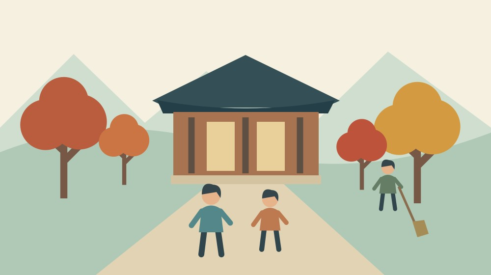

大洞院の紅葉まつり2026｜昼と夜の日程比較

Q. 大洞院の紅葉まつりとライトアップは、同じ日に同じ時間で行われる？
2026年の紅葉まつりは11月23日10～16時、ライトアップは11月23～29日17～20時です。昼の催しと夜の照明は期間・時間が異なります。開催予定は大洞院公式で確認し、色づきや雨天時の扱い、帰りの移動も別に確かめてください。例年の見頃は、今年の見頃を保証する情報ではありません。
紅葉の境内を開く人の仕事も、予定に入れて考える
大洞院の紅葉まつりへ行くなら、景色を見る時間だけでなく、帰る時間も決めておきたいと思います。寺院の境内は、催しのためだけに存在する場所ではありません。参拝者を迎え、建物や庭を守り、日々の務めを続ける方々がいて、その上に秋の公開があります。
大石浩之（磐田市／不動産業）です。森町の外で暮らす私が今回考えるのは、実家を訪ねる予定と紅葉見物をどう組み合わせるかです。昼の催しも夜の照明も見たいという気持ちは分かります。ただ、ご家族の移動や迎える側の準備を考えると、全部を一日に詰めるのがよいとは限りません。
この記事は、2026年10月24日に確認した大洞院公式の開催案内を基にしています。私が現地で今年の紅葉を見た記録ではありません。日程として確認できたことと、私からの予定の立て方を分けて書きます。色づきの予想を、確定した事実としてお伝えすることもしません。
事実整理｜昼は11月23日、夜は23日から29日
大洞院公式「大洞院 紅葉まつり 2026」は、11月23日（月・祝）の午前10時から午後4時までを案内しています。ライトアップは11月23日から29日まで、午後5時から午後8時です。昼の行事は一日、照明の案内は七日間。この違いを先に押さえると、訪問日を選びやすくなります。
11月24日以降に訪ねる場合、23日の昼の催しも続いているとは考えられません。公式に示されたライトアップの日程と、紅葉まつりの日程は別です。予定表に「大洞院の祭り」とだけ書くより、「23日の昼」か「夜の照明」かを記しておくほうが、家族間の食い違いを防げます。
昼の終了は午後4時、照明の開始は午後5時です。時刻の差は1時間ですが、その間に同じ場所で待てるか、休憩できるかは今回の案内では確認できません。連続した一つの催しとして午前10時から午後8時まで滞在できると、この記事で保証することはできません。
公式には、森の石松の限定御朱印500円、露店は11月20日ごろから境内に出店予定とあります。「ごろ」「予定」という条件を外さずに読む必要があります。露店の品目、出店数、各店の営業時間は確認していません。食事をすべて現地で済ませられる前提で計画しないほうがよいと私は考えます。
ちんどん太鼓のまど舎・紺野しょうけいさんの登場は、午前11時ごろから午後4時ごろの案内です。どの時刻に何を見たいのかで到着の目安は変わります。御朱印の授与、紅葉を見る散策、催しの観覧を同じ目的にまとめず、ご家族が優先するものを一つ選んでおく方法があります。
例年の見頃と、今年の開催日を混ぜない
大洞院公式では、例年の紅葉の見頃を11月中旬から12月上旬としています。これは季節の目安です。2026年11月23日に必ず最盛期になる、あるいは29日まで同じ状態が続くという意味ではありません。行事の日程が決まっていることと、葉の状態が決まることは別です。
同じ公式サイトには、2024年11月26日の境内紹介など、過去の様子も載っています。写真を見るときは、見出しだけでなく撮影・紹介された年を確認してください。きれいな紅葉写真が表示されていても、それが2026年10月24日の境内を写しているとは限りません。
私は、行事を目的に行く日と、色づきを目的に選ぶ日を分ける考え方を勧めます。11月23日の催しを見たいなら日程を優先します。紅葉の状態を優先するなら、直前の案内で確認します。どちらも楽しみたい場合でも、自然の状態まで予約できるわけではありません。
天候による実施変更や雨天時の扱いは、確認した開催案内では分かりません。雨でも必ず開催されると断定しないでください。予定を決めたら、出発前に公式情報を再確認します。問い合わせをする場合は、訪問日と昼夜のどちらを希望するかを伝えると、尋ねたい内容が明確になります。
大洞院は紅葉を見る場所であり、信仰の場所でもある
森町公式「41 交通・信仰」は、大洞院を曹洞宗の寺院として紹介し、森の石松の墓があることを記しています。地域の信仰や暮らしとの結びつきを伝える資料です。紅葉の催しだけで寺を説明しないために、訪問前に目を通す意味があります。
森町公式「15 大洞院6派の展開」は、大洞院を遠江の曹洞宗の発展に関わる拠点として扱っています。門下の六人の僧と各派の展開が説明されています。ここで紹介した二つの町公式資料は歴史の背景を確かめるもので、2026年の催しの時刻を示す資料ではありません。
私は、境内の景色と寺の歴史を切り離さないで歩きたいと思います。写真を撮るために一か所を長く占めたり、建物の開いている場所すべてへ自由に入れると考えたりしない。現地に掲示された案内を読み、参拝や寺の仕事が続く場所として利用することを提案します。
石松の墓に関心がある方には、森の石松の墓と建て直しを扱った記事もあります。今回の記事は墓の来歴を繰り返すのではなく、秋の訪問を無理なく組むための案内です。過去の歴史と今年の行事を、読む目的に応じて分けて使ってください。
良い点｜昼と夜を選べる日程が示されている
大洞院の2026年の案内で私が評価するのは、昼の紅葉まつりとライトアップの日時が区別されていることです。家族の仕事や帰宅時刻に合わせて、選ぶ材料があります。夜だけが魅力なのでも、昼だけが正解なのでもなく、同行する人の条件に合わせて考えられます。
ライトアップが11月23日から29日まで案内されているため、23日だけに予定を集中させず検討できます。ただし、別の日なら空いているとは確認していません。選択肢があることと、混雑が少ないことは違います。私は、候補日を持てる点を利点として受け止めます。
駐車場についても、公式は約50台分で無料と説明しています。所在地は森町橘249です。行く先と駐車の規模が分かるのは、ご家族の移動を考える助けになります。台数が示されていても予約した場所ではないので、到着時に確実に停められる保証としては使えません。
寺院が境内を開き、季節の催しや照明を案内することには、準備と管理が伴います。私は、利用する側が日時を確かめ、現地の誘導を守ることで、その負担を軽くできると考えます。地域行事を支える作業の見方は、森町の祭りを支える担い手にもつながります。
注文したい点｜夜の帰路まで分かる案内がほしい
大洞院のライトアップへ行く計画では、帰路の条件が気になります。公式の開催時間は午後8時までですが、公共交通でその後に帰れるか、どこで迎えを待てるかは、今回の開催案内では確認できません。私は、夜間の出入口や乗降の案内へ進めると、家族が判断しやすくなると思います。
私が迷うのは、昼から夜まで両方を見る予定を勧めてよいかです。二つの景色を楽しめる魅力はあります。しかし、寒さや歩行の負担、食事、休憩場所が分からないまま、長時間の滞在を勧める気にはなれません。親御さんと一緒なら、まず昼か夜のどちらかに絞る案も残したいと思います。
公式サイトには通常の窓口時間として午前9時30分から午後2時30分の記載があります。催しやライトアップの時間とは異なります。夜間に通常の窓口業務も利用できるとは確認していません。御朱印など特定の用事がある場合は、当日の取扱時間を別に尋ねる必要があります。
私は、すべての情報を一枚へ詰めることを求めているわけではありません。開催日、照明の時間、窓口の時間が別であると分かる案内があると助かる、という注文です。利用する側も、見つからない情報を「当然ある」と思わず、自分に必要な項目だけまとめて確認したいところです。
対案・結論｜同行者の帰宅時刻から昼夜を選ぶ
大洞院への秋の訪問は、まず帰宅したい時刻を決めると計画しやすくなります。私なら、夕方には家へ戻りたい人と行く日は昼の催しを候補にします。夜の照明を見たい日は、運転する人や迎えの方法を先に決めます。これは家族の段取りの提案で、寺が指定する来場方法ではありません。
実家への立ち寄りを同じ日に組むなら、家の用事をどこまで行うかも決めます。庭の片付け、郵便物の整理、親族との話し合いなどを全部済ませてから出かける計画は、時刻が読みにくくなります。行事に間に合わせるために実家の用事を急ぐより、別日に分ける選択もあります。
車で向かうときは、場所と道路の状況を確認します。森町の通行止め情報の調べ分けは、県道と町道の確認先を整理しています。この記事から特定の道が現在通れると保証することはできません。出発日に利用予定の経路を確かめてください。
同行する家族と別々の車で動く場合、現地で必ず隣に停められるとは考えないほうがよいと思います。電話がつながらないときの待ち合わせ方法や、先に帰る場合の連絡を決めます。駐車場で待てる場所や時間は現地の案内に従い、周辺の空き地を駐車場所として使わないでください。
電話で確認する場合の連絡先は、大洞院公式に記載された0538-85-2009です。訪問日、昼の催しか夜の照明か、確認したい用事を簡潔に伝えます。この記事では個別の電話確認はしていません。公表されていない条件を、聞いてきた事実のようには書きません。
家族に残す記録｜今年の案内であることを残す
大洞院へ行く家族のメモには、訪問する年月日、昼夜の別、現地に着く目安、帰宅時刻、運転する人を残すと使えます。ページのリンクも添え、確認日を2026年10月24日などと書きます。来年そのまま使わないためにも、年を省略しない方法を私は勧めます。
家族の一人が公式案内を調べた場合も、他の人へ結論だけを送らないでください。「23日10～16時の催し」と「23～29日17～20時の照明」を別の行にすると、どちらの予定か確認できます。これは転載する公式告知ではなく、家庭内の予定をそろえるためのメモです。
写真を撮ることが目的なら、現地の撮影案内を確認します。今回の公式本文から、三脚や特定場所での撮影が許可されているとは判断できません。人が集まる時間帯に道をふさがないこと、他の参拝者が写る場合に配慮することを、私は訪問する側の準備に含めたいと思います。
大石の視点｜開いている景色には維持する仕事がある
森町の寺院を訪ねる計画を、私は建物と土地を維持する仕事からも考えます。境内の美しさだけを見れば、見る側の楽しみで話が終わります。しかし、道、樹木、建物、照明を使える状態に保つ人がいます。今回、個別の費用や人数を調べたわけではなく、負担の金額は分かりません。
私はこう考えます。無料の駐車場があることは、管理する費用がないことを意味しません。訪問する私たちができるのは、指定された時間を守り、誘導に従い、無理な駐車をしないことです。催しを楽しむ人の行動も、翌年また開いてもらえる条件に関わると考えます。これは私の意見です。
今日できる小さな一歩は、ご家族へ「昼と夜、どちらを見たいか」と確かめることです。色づきの予想を追う前に、同行する人の条件をそろえます。昼夜の日程を分けて書く。それだけで、行きたい気持ちを無理のない訪問へ近づけられます。
FAQ｜大洞院の秋の訪問で迷うこと
大洞院の紅葉まつりとライトアップは、日程と時間が異なります。見頃や駐車場の案内も、訪問する日の状況とは分けて確認してください。
11月24日以降も紅葉まつりの昼の催しがありますか？
公式が案内する2026年の紅葉まつりは、11月23日の午前10時から午後4時です。11月23～29日の午後5時から午後8時はライトアップの案内で、同じ期間に昼の催しが続くという意味ではありません。希望する用事がある場合は、その開催日と取扱時間を公式情報で確かめてください。内容が変更される可能性もあります。
11月23日なら紅葉は必ず見頃ですか？
見頃は確約できません。大洞院公式は例年の目安を11月中旬から12月上旬としていますが、2026年の特定日の色づきを保証する情報ではありません。同じサイトに過去の境内写真もあるため、写真の年や日付を確かめてください。催しの日程と自然の状態を分け、紅葉を優先する場合は訪問直前の情報も確認する必要があります。
駐車場は予約なしでも必ず停められますか？
公式では駐車場を約50台分・無料と案内し、シーズン中は混雑する場合があるとしています。台数は当日の空き枠を示すものではなく、必ず停められるとは確認できません。予約の取扱いも本記事では確認していません。同行する車の台数や帰りの方法を先に相談し、現地では掲示や誘導に従って利用してください。
出典・確認日
2026年10月確認。開催・制度の数値は公式情報、評価と段取りの提案は執筆者の意見です。
- 大洞院：2026年紅葉まつりの案内（2026年10月24日確認）
- 森町：41 交通・信仰（2026年10月24日確認）
- 森町：15 大洞院6派の展開（2026年10月24日確認）
開催日時、取扱条件、制度・数値は変わる場合があります。実際の利用前に主催者・担当窓口の最新案内を確認してください。個別の判断が必要な場合は、担当窓口や関係する専門家へご相談ください。